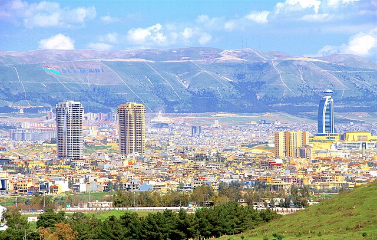

sulaymaniyah

Slemani,
also spelled Sulaymaniyah
romanized: as-Sulaymāniyyah[5]),
is a city in the east of the Kurdistan Region of Iraq,
not far from the Iran–Iraq border. It is surrounded by the Azmar (Ezmer),
Goizha (Goyje) and Qaiwan (Qeywan) Mountains in the northeast,
Baranan Mountain in the south and the Tasluja Hills in the west.
The city has a semi-arid climate with very hot dry summers and cold wet winters.